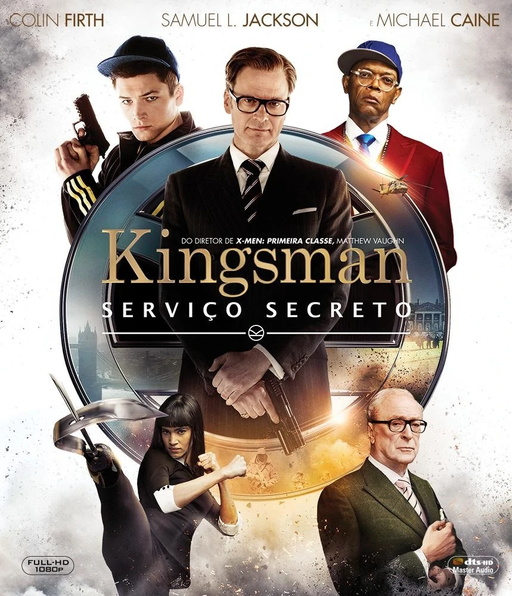

Filmes De Terror
Chuck
A mosca
Atividade Paranormal

>Sinopse
Uma mulher compra paraseu filho um boneco amaldiçoado
por um assassino em série morto dentro uma loja
de brinquedos.Pouco antes, ele faz um,
ritual de vodu com o boneco, que ganha
vida e se torna um perigoso psicopata.

>Sinopse
O excêntrico cientista Seth Brundlecompleta seu dispositivo de
teletransporte e decide testar a eficácia do experimento
em si próprio. Sem que ele percea,uma mosca cai no
aparelho durante o processo e provoca uma fusão
dele com o inseto. Contudo, ele pensa que o
experimento foium sucesso, até que começa a
notar que as células da mosca estão tomando
conta de seu corpo, e ele acabase tran-
sformando em uma criatura monstruosa.

>Sinopse
Logo após se mudarem para uma nova casa, Katie e
Micah ficam intrigados com o que parece ser uma
presença sobrenatural que está agindo sobre o
lugar.O casal decide capturar o possível
fenômeno em vídeo,mas nenhum deles
estava preparado para os acontecimentos
que se seguem.
Filmes de Ação
Feito na America
Kingsman

007

>Sinopse
Barry Seal, um piloto oportunista da Trans World Airlines,
é recrutado pela CIA para realizar uma das maiores
operações secretas da história dos Estados Unidos.
>Sinopse
Uma organização de espionagem recruta um jovem de rua rebelde,
mas com um futuro promissor,para um programa de treinamento
ultracompetitivo. O elegante agente Harry Hart vê muito
potencial no jovem Eggsy, apesar do temperamento.
Após passar pela intensa preparação do serviço
secreto, Eggsy tem de enfrentar uma ameaça
global que emerge de um gênio da
tecnologia. O plano dovilanesco
Richmond Valentina de uma
matança em larga escala.

>Sinopse
James Bond deixa o MI6 e se muda para a Jamaica, mas um antigo
amigo aparece e pede sua ajuda para encontrar um cientista
desaparecido. Bond mergulha no caso e percebe que a
busca é, na verdade, uma corrida para
salvar o mundo.
Filmes Animação
Homem Aranha No Aranha Verso
Red:crescer é uma fera
Lucas

>Sinopse
Após ser atingido por uma teia radioativa, Miles Morales, um jovem
negro do Brooklyn, se torna o Homem-Aranha, inspirado no legado
do já falecido Peter Parker. Entretanto, ao visitar otúmulo
de seu ídolo em uma noite chuvosa, ele é surpreendido
com a presença do próprio Peter, vestindo o traje do
herói por baixo de um sobretudo. A surpresa fica
ainda maior quando Miles descobre que ele veio
de uma dimensão paralela, assim como outras
versões do Homem-Aranha.

Uma menina de 13 anos começa a se transformar em um
>Sinopse
panda vermelho gigante sempre que fica animada.
>Sinopse
Luca vive aventuras com seu novo melhor amigo, mas a
diversão é ameaçada por um segredo: seu amigo é um
monstro marinho de outro mundo que fica abaixo da
superfície da água.